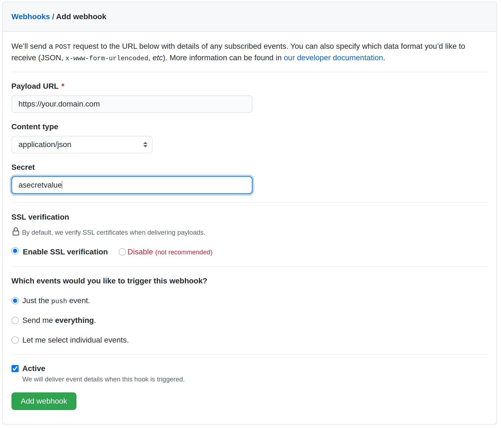

Webhook¶
By default, Fleet utilizes polling (default: 15 seconds) to pull from a Git repo.However, this can be configured to utilize a webhook instead.Fleet currently supports Github, GitLab, Bitbucket, Bitbucket Server and Gogs.
1. Configure the webhook service. Fleet uses a gitjob service to handle webhook requests. Create an ingress that points to the gitjob service.¶
apiVersion: networking.k8s.io/v1beta1
kind: Ingress
metadata:
name: webhook-ingress
namespace: fleet-system
spec:
rules:
- host: your.domain.com
http:
paths:
- path: /
pathType: Prefix
backend:
serviceName: gitjob
servicePort: 80
Note
You can configure TLS on ingress.
2. Go to your webhook provider and configure the webhook callback url. Here is a Github example.¶

Configuring a secret is optional. This is used to validate the webhook payload as the payload should not be trusted by default. If your webhook server is publicly accessible to the Internet, then it is recommended to configure the secret. If you do configure the secret, follow step 3.
Note
only application/json is supported due to the limitation of webhook library.
Note
If you configured the webhook the polling interval will be automatically adjusted to 1 hour.
3. (Optional) Configure webhook secret. The secret is for validating webhook payload. Make sure to put it in a k8s secret called gitjob-webhook in fleet-system.¶
| Provider | K8s Secret Key |
|---|---|
| GitHub | github |
| GitLab | gitlab |
| BitBucket | bitbucket |
| BitBucketServer | bitbucket-server |
| Gogs | gogs |
For example, to create a secret containing a GitHub secret to validate the webhook payload, run:
kubectl create secret generic gitjob-webhook -n fleet-system --from-literal=github=webhooksecretvalue